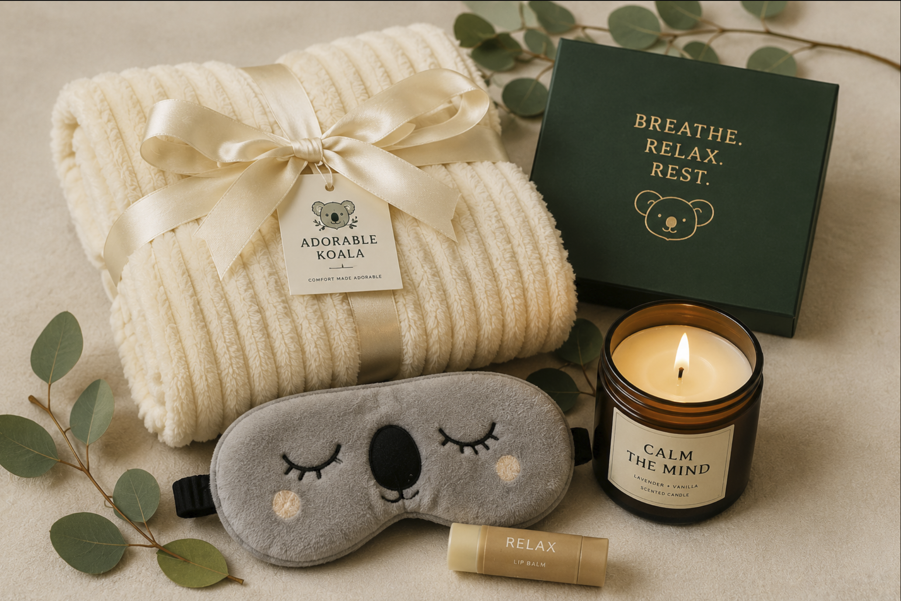

Encouragement
A small gift can support someone during exams, a new job, a move, or another stressful experience.

Busy schedules, school responsibilities, work, and unexpected challenges can make it difficult for people to slow down. Simple comforting items can help create a peaceful routine and remind someone to take a break.
Comfort gifts can also communicate care when it is difficult to find the right words. A personalized package shows that someone was thinking about the recipient and chose items specifically for their needs and personality.
A small gift can support someone during exams, a new job, a move, or another stressful experience.
Soft textures, warm drinks, and calming scents can help create a relaxing evening routine.
Sending a personalized care package helps friends and family members feel remembered and appreciated.
Adorable Koala exists to make comfort easier to give, receive, and include in everyday life.